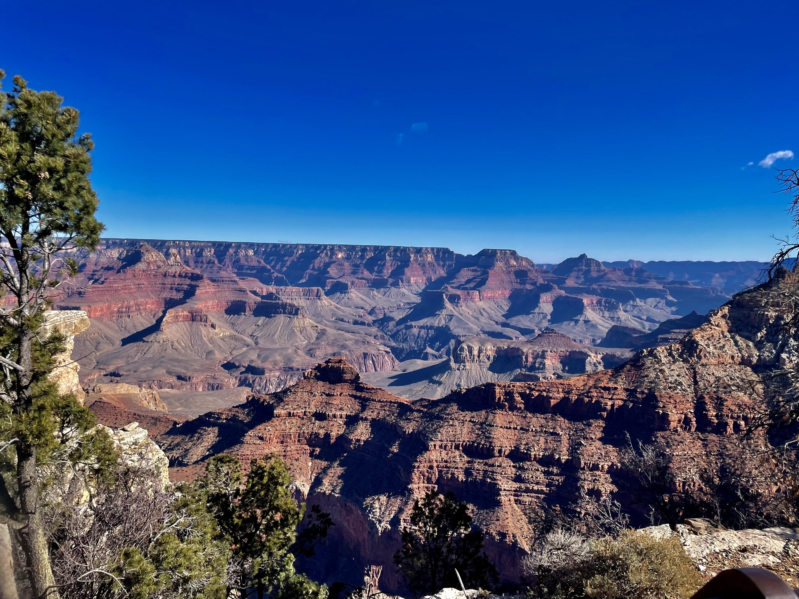

View of Grand Canyon National Park, in Grand Canyon Village, AZ.
The National Park Service oversees a huge system of natural, cultural, and historic sites, but chronic underinvestment in necessary maintenance and repairs over the years has led to a staggering $23.3 billion backlog of deferred maintenance. The longer these issues are left unaddressed, the more expensive repairs become.
Deferred maintenance directly impacts a visitor's time within the national parks. These parks are meant to serve as places where people can recreate in nature, learn about the biodiversity of American landscapes, and engage with complex histories. But when visitors are met with trails they can't hike, buildings they can't enter, and signage so old its information is out of date or incorrect, they are left with a diminished experience. The national parks deserve to be invested in so they can continue to serve all people safely.
The Great American Outdoors Act, signed into law in 2020, provided $6.65 billion to address repairs in parks across the country over a five year period. This legislation expires at the end of 2025. National park lovers can help protect the future of these parks by encouraging Congress to renew the law. You have the power to make meaningful change!
Update March 2026:
This website was originally created in October 2024 and referenced legislation active at the time encouraging individuals to contact their representatives to urge support for the reauthorization of the Great American Outdoor Act (GAOA).
As of 2025, the Act has expired and is no longer active. A related bill, The America the Beautiful Act, has been proposed but as of March 2026 has not yet been passed by congress.
The general message of supporting and advocating for the U.S. National Parks remains relevant, possibly even more so now than ever before. Since taking office in January 2025, the Trump Administration has recklessly gutted and dismantled the National Park System,
threatening its integrity as an eminent representation of public land protection.
According to the National Park Conservation Association,
the National Park Service has lost 24% of its permanent staff since January 2025, leaving parks with skeletal crew despite rising visitation rates.
Historical and scientific information relevant to park sites is also being actively edited, erased, and rewritten following directives by the Trump Administration.
This includes the removal of references to transgender contributions from Stonewall National Monument in February 2025,
as well as the removal of climate change signage at Acadia National Park in September 2025.
These are just two examples of the broader sanitization that has taken place across the national parks since the Trump Administration has taken office for its second term.
Other changes have similarly altered interpretations of Native American history, Black history, Woman's history, and more. Read about it here: Here Today, Gone Tomorrow.